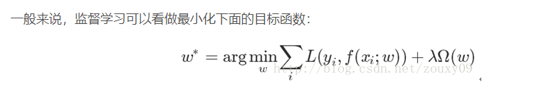
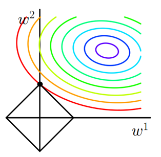
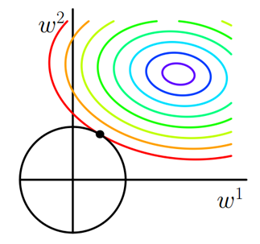

【统计学习】L0\L1\L2正则化
参考:
[1]https://www.cnblogs.com/Peyton-Li/p/7607858.html
[2]http://blog.csdn.net/zouxy09/article/details/24971995
0.简介

其中第一项是损失函数的计算。也就是真实值与估计值的误差。后面的$\Omega$就是正则项。
我们训练希望让真实值与估计值的误差尽可能的小。也就是模型尽可能拟合训练数据。但是，我们不仅希望模型训练误差小，测试误差也小（也就是泛化能力强），而复杂的模型可能会产生过拟合（也就是过度拟合训练数据，但是整体数据集上不能很好的拟合），于是我们加上第二项，也就是正则化项（regularizer）或者惩罚项（penalty term），这是一个约束项，目的是去约束模型，让其变得简单。
规格化函数$Omega$有很多种，常见的有零范数、一范数、二范数、迹范数、Frobenius范数和核范数等等
一、L0范数与L1范数
L0范数是指向量中的非零个数，如果用L0来规格化一个参数矩阵的话就是希望W的大部分元素都为0。，也就是让W的参数是稀疏的。
但是会发现。各类文章中提到的更多是L1范数。为什么大家都用L1而不是L0呢？
这也是这节的题目把L0和L1放在一起的原因，因为他们有着某种不寻常的关系。
L1范数是指向量中各个元素绝对值之和，也叫“稀疏规则算子”（Lasso regularization），同L0一样，都能使得参数矩阵稀疏化。
Q：为什么L1会使W变得稀疏呢？
因为L1范数是L0范数的最优凸近似，任何的规则化算子，如果他在Wi=0的地方不可微，并且可以分解为一个“求和”的形式，那么这个规则化算子就可以实现稀疏
W的L1范数是绝对值，|w|在w=0处不可微
因为L0难以优化（优化问题很难求解，NP难问题），因此人们更多使用L1范数
总结:L1范数和L0范数可以实现稀疏，L1因具有比L0更好的优化求解特性而被广泛应用。
参数稀疏的好处
1.特征选择((Feature Selection)
有些影响较小，或者没有影响的特性，它会学习地去掉这些没有信息的特征，也就是把这些特征对应的权重置为0。
2.可解释性
通过观察权值。可以知道哪些特征更有用，或者说只由哪些特征决定

彩色实线是的等值线，黑色实线是L1正则的等值线。二维空间（权重向量只有和）上，L1正则项的等值线是方形，方形与的等值线相交时相交点为顶点的概率很大，所以或等于零的概率很大。所以使用L1正则项的解具有稀疏性。
L2范数
使用L2范数的回归，可以叫岭回归（Ridge Regression）或者“权值衰减（weight decay）”
它的强大功效是改善机器学习里面一个非常重要的问题：过拟合
L2范数是指向量各元素的平方和然后求平方根。我们让L2范数的规则项||W||2最小，可以使得W的每个元素都很小，都接近于0，但与L1范数不同，它不会让它等于0，而是接近于0，这里是有很大的区别的哦。而越小的参数说明模型越简单，越简单的模型则越不容易产生过拟合现象。

彩色实线是$J_0$的等值线，黑色实线是$L2$正则的等值线。二维空间（权重向量只有和）上，L2正则项的等值线是圆，与的等值线相交时或等于零的概率很小。所以使用L2正则项的解不具有稀疏性。在求解过程中，L2通常倾向让权值尽可能小，最后构造一个所有参数都比较小的模型。因为一般认为参数值小的模型比较简单，能适应不同的数据集，也在一定程度上避免了过拟合现象。参数足够小，数据偏移得多一点也不会对结果造成什么影响，可以说“抗扰动能力强”。
Q\A
Q1:为什么通过L1正则、L2正则能够防止过拟合
解释：
过拟合产生的原因通常是因为参数比较大导致的，通过添加正则项，假设某个参数比较大，目标函数加上正则项后，也就会变大，因此该参数就不是最优解了。
问：为什么过拟合产生的原因是参数比较大导致的？
答：过拟合，就是拟合函数需要顾忌每一个点，当存在噪声的时候，原本平滑的拟合曲线会变得波动很大。在某些很小的区间里，函数值的变化很剧烈，这就意味着函数在某些小区间里的导数值（绝对值）非常大，由于自变量值可大可小，所以只有系数足够大，才能保证导数值很大。
！！！正则化可以看做是事前分布的对应。
L2正则化是让权重w服从一个均值为0,方差为$\sigma_0^2$的高斯分布。方差越小对应惩罚系数越大。
L1正则化是让其满足Laplace分布。